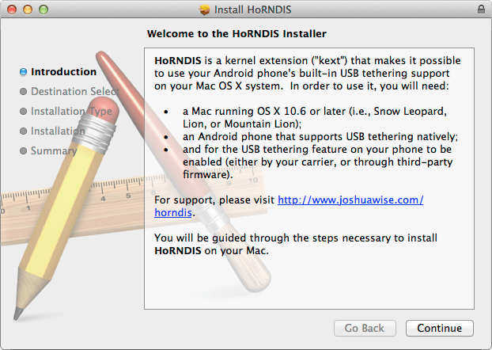

Install HoRNDIS
Install the HoRNDIS (pronounced “horrendous”) kernel extension to use Ethernet over USB via the RNDIS protocol on your Mac. You must reboot your computer after installing HoRNDIS.

-
Get the latest version of HoRNDIS. Visit http://joshuawise.com/horndis#available_versions and click on the “HoRNDIS-rel[version].pkg (bytes)” link for the latest version.
-
Double-click on the downloaded HoRNDIS-rel[version].pkg to start the installation wizard.

-
Follow the installation wizard prompts. Click “Next” where needed.
-
Once you have finished with the installation wizard, you must restart your Mac for the changes to take affect.